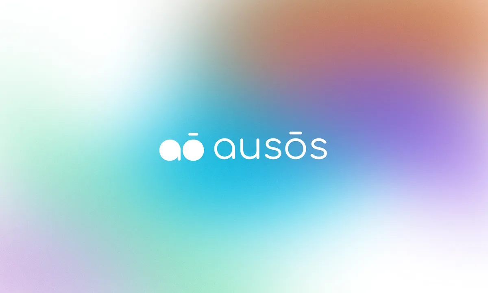

ausōs.ai
AI-powered visual web builder: bridging conversational AI and drag-and-drop design with multi-design-system support.
Markets UX, design systems, AI workflows. Inside the banks most never see.
Fifteen years designing the tools behind trading, risk, and data workflows most people never see. Now leading design at Barclays and founding ausōs.ai, an AI-native builder in private alpha.
Recently Trust surfaces in AI for expert users
Ask ShannonAn AI-native product I'm founding on the side. Currently in private alpha with a handful of early testers across design teams and independent builders.

Design leader for the tools experts stare at for hours.
Design leader at Barclays, shaping trading platforms, AI-enhanced workflows, and enterprise design systems. Nine years at J.P. Morgan as VP Product Design before that. Now also founding ausōs.ai, an AI-native visual web builder.
I'm Shannon's AI. I'll do my best, but check with her for anything important.